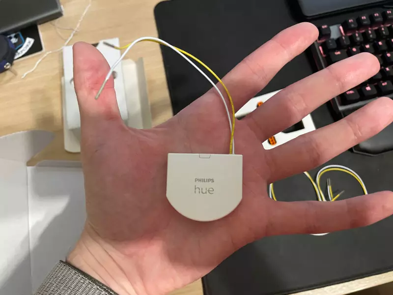
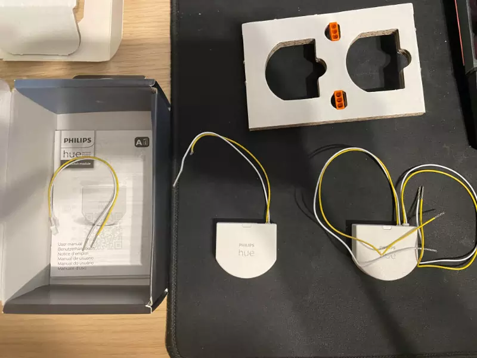
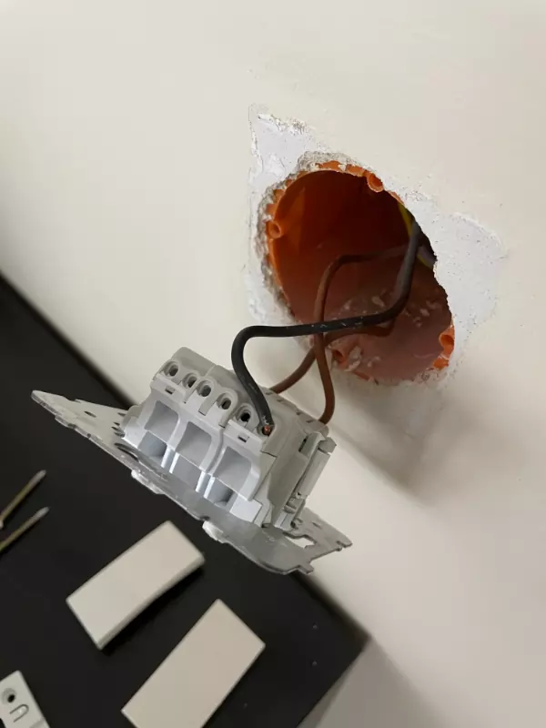
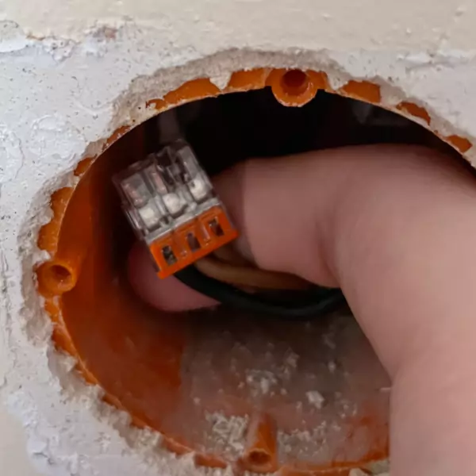
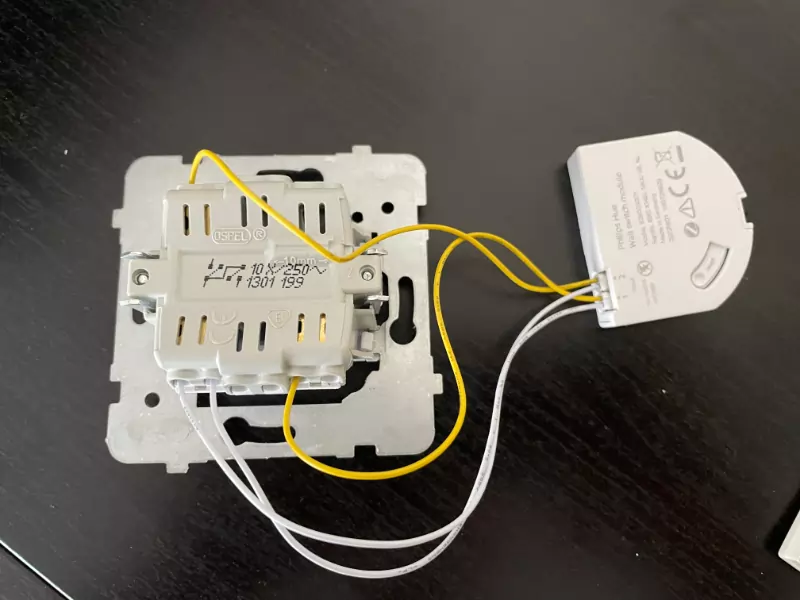

Hue Wall Switch
Internety mówiły: nie kupować, bo drogie, mało funkcjonalne, są lepsze i tańsze. Mimo to kupiłem. Dwu-pak Philips Hue wall switch. Dlaczego? Bo był na drobnej promocji. Bo mam trzy żyrandole, podłączone pod dwa klasyczne przełączniki ścienne wypełnione tylko żarówkami Hue.
Dwa z nich (na podwójnym przełączniku) - salon/jadalnia - są przeważnie wyłączone, co w zigbee2mqtt generuje mi dużo spamu o niedostępności urządzeń. A że to jest razem 12 żarówek, to irytuje. Miło będzie odzyskać kontrolę nad nini w pełni, być może uwzględnić w przyszłych automatyzacjach symulujących “obecność”.
Drugi przełącznik jest łazienkowy. W samej łazience jest już pilot do gotowych scen z przyciemnianiem światła. No ale jest w ludziach niesamowicie silne przyzwyczajenie szukać tego fizycznego przełącznika koło drzwi łazienki, szczególnie wśród gości :) Inną rzeczą jest irytujące w nich niezapamiętywanie od razu wybranej sceny. Wychodząc wieczorem z łazienki ustawiam przyciemnioną scenę i wyłączam przełącznikiem. Jeśli nie odczekam ok. 15 sekund pomiędzy tymi czynnościami, to potem zapalą się pełną jasnością. Hue wall switch rozwiąże tą niedogodność z “power-on behavior after power-loss”.
Rozpakowanie⌗
Pierwsze wrażenie: ale to małe. Następnie myśl: musi takie być, bo jakbyś inaczej chciał to do puszki wcisnąć? W komplecie dostaje się po jednej 3-wejściowym łączniku typu wago do połączenia na stałe zasilania żyrandola(!), po dwa dwu-żyłowe przewody z jednej strony zakończone wtyczką do Hue, z drugiej ok. 1cm odsłoniętej żyły do przełącznika oraz po jednej baterii CR2450 już umieszczonej w środku. 
Podsumowując:
- jedynym sposobem na odłączenie zasilania od żyrandola będzie bezpiecznik w rozdzielnicy,
- to jest zasilane bateryjnie; Philips twierdzi że jedna bateria wystarczy na 5 lat pracy,
- Hue nie jest w żaden sposób połączony z instalacją elektryczną,
- tak naprawdę, to po prostu przekształca przełącznik ścienny w wersję całkowicie bezprzewodową.
Parowanie⌗
Ok, czas na parowanie. Zezwalam w Z2M na dołączanie urządzeń, wciskam i trzymam “reset”. Coś mignęło, puszczam, czekam - nic. Przytrzymuję drugi raz, tym razem 10 sekund jak przy Dimmer switchu. Miga, miga - nic.
Odgrzebałem i podłączyłem zatem mostek Hue. Instaluję apkę, szybkie parowanie apki z mostkiem i lecimy jak Philips przykazał. Zaskoczenie. Trzeba podłączyć jedną parę kabelków (chyba tylko na porcie “1” mi złapało) i je zewrzeć ze sobą. Cyk! Parowanie zakończone. Skoro już uruchomiłem mostek, to sparuję od razu drugą i sprawdzę czy nie ma aktualizacji, a tu mają już najnowszy firmware. No to jak już wiem co robiłem źle - usuwam z mostka i wyłączam go.

Wracam do Z2M, ponownie otwieram sieć, trzymam “reset” na switchu przez 10 sekund, następnie zwieram kabelki. Poszło! Coś wskoczyło, ale jako niekompatybilne? Och, wywiad urządzenia trwał kilka sekund - dłużej niż wszystkie dotyczasowe. Jest już w pełni rozpoznany i skonfigurowany. Powtarzam czynności dla drugiego. Jeszcze tylko wstępnie ustawiam na jednym tryb pracy 1-przełącznik (single-push-button), na drugim 2-przełącznik (double-push-button).
Montaż⌗
Elektrykiem nie jestem, ale mając ogólne pojęcie o instalacjach elektrycznych podjąłem się samodzielnego montażu. Na początek wyłączyłem bezpiecznik od oświetlenia (wszystkie lampy sufitowe i ścienne mam na jednym) i do dzieła. Na pierwszy ogień łazienka. Szybki demontaż przełącznika, kontrolne sprawdzenie neonówką czy na pewno nie ma prądu, odpięcie przewodów od przełącznika, spięcie ich złączką wago z zestawu i wciśnięcie na tył puszki. Okazało się że mam tutaj przypadek przewodu 2-żyłowego, czyli bez N. Philipsowu nie robi to żadnej różnicy, bo i tak muszę złączyć tylko przewody fazowe ze sobą.
Następnie podpięcie samego Wall switcha do przełącznika w miejsce poprzednich przewodów, włączenie bezpiecznika, szybkie napisanie automatyzacji w Home Assistant do wł/wył świateł łazienkowych i test. Działa! Bezpiecznik znowu wyłączony i składam puszkę. Wszystko zmieściło się bez żadnego upychania.
Druga puszka - salonowa - okazała się być 4-żyłowa, zastałem tam zarówno N jak i uziom, po prostu spięte ze sobą przez wago. Tym razem przełącznik jest 2-wyjściowy, robię zdjęcie przed rozmontowaniem, odpinam wszystkie 3 przewody i spinam je wago, po czym wciskam na tył puszki.


Tym razem chwila zastanowienia przy podpinaniu Hue. Sięgam do jego instrukcji podpinam i testuję, obsrewując komunikaty w konsoli Z2M. Coś jest nie tak… Lewy przełącznik działa w cały świat. Spojrzałem na schemat na tyle przełącznika i dotarło do mnie jak głupio to spiąłem ze sobą. Szybka zamiana kabelków i voilá. Komunikaty są już właściwe. Montuję do puszki, włączam bezpiecznik, kopiuję automatyzacje z łazienki i sprawdzam. Jest miodzio.

Całość zajęła mi jakąś godzinę, ale nie spinałem się jakoś mocno żeby nie zrobić głupoty, w końcu z prądem nie ma żartów. Teraz zniknie mi już problem żarówek w stanie offline, a sieć zigbee odetchnie bez ciągle znikających i pojawiających się routerów.
Bonus⌗
Przy ostanim włączaniu bezpiecznika stwierdziłem, że tym razem warto przestawić żarówki podpięte teraz na stałe do prądu w tryb wyłączenia po powrocie z zaniku zasilania. Korzystając w wcześniej poznanej metody wysyłam dla każdej (łącznie 14) komunikat MQTT z tematem zigbee2mqtt/ŻARÓWKA/set i ładunkiem {"hue_power_on_behavior": "off"}.
Inny zaobserwowany fakt, to że teraz pilot łazienkowy również może włączać światło, skoro przywołuje sceny do stale zasilanych żarówek.